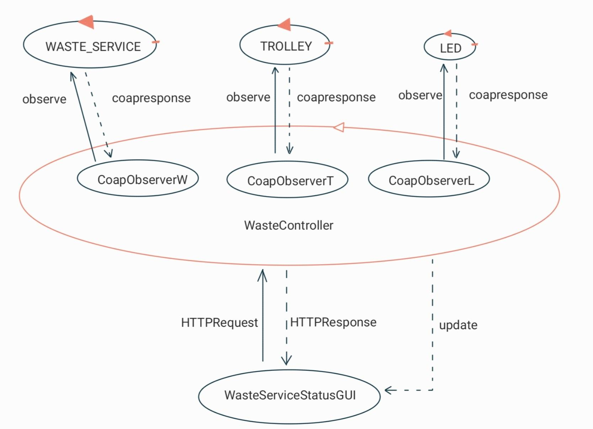
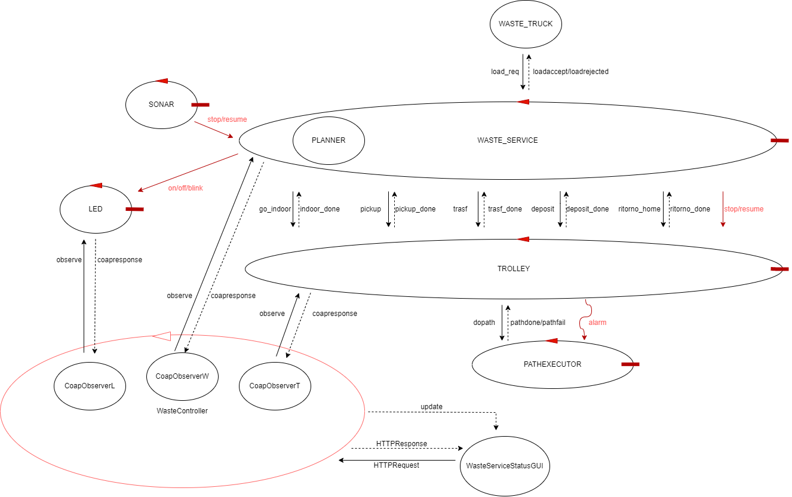
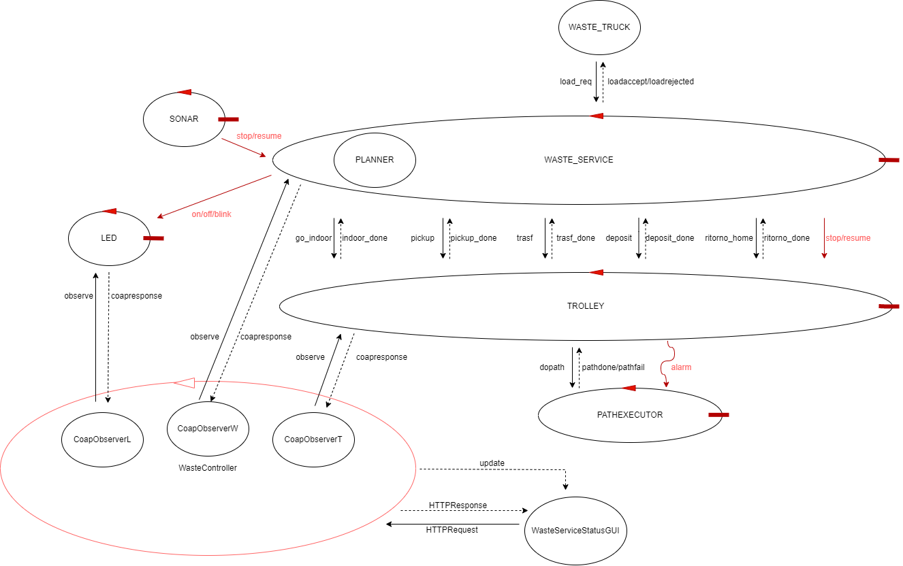

Introduction
Progetto finale del corso di studio Ingegneria dei sistemi software M, Laurea Magistrale Università di Bologna. (SPRINT 3)
Sprint 2 results
Di seguito é riportato il risultato finale ottenuto al termine dello Sprint 2:

MODELLO: Contesto WASTE_SERVICE e TROLLEY
Modello eseguibile SONAR.
Modello eseguibile LED.
TEST: Test WASTE_SERVICE
Test LED
MODELLO: Contesto WASTE_SERVICE e TROLLEY
Modello eseguibile SONAR.
Modello eseguibile LED.
TEST: Test WASTE_SERVICE
Test LED
Requirements
Per la parte di requisiti si veda la sezione Requirement dello Sprint 1
Requirement analysis
PUNTI APERTI:
- La GUI deve avere un particolare design?
No - In che forma deve essere rappresentato lo stato e la posizione del TROLLEY?
Stato: HOME, STOPPED e MOVIMENTO
POSIZIONE: puó essere precisa (coordinate o mappa) oppure approssimativa (area in cui si trova). STATO TROLLEY, LED E BOX
La GUI deve monitorare lo stato di TROLLEY, LED e Box perció é necessario analizzare come ottenere tali informazioni.RAPPRESENTAZIONE DELLA POSIZIONE DEL TROLLEY
La posizione del TROLLEY puó essere precisa, espressa mediante coordinate o mappa, oppure approssimativa, indicando l'area in cui si trova o in cui si sta dirigendo.RAPPRESENTAZIONE CENTRALIZZATA O DISTRIBUITA DELLO STATO
La GUI deve mostrare lo stato di TROLLEY, LED e Box, queste informazioni possono essere contenute da un'unica entitá oppure essere distribuite tra le varie entitá del sistema.
Per le considerazioni fatte su Requisiti funzionali e Requisiti non funzionali si vedano i paragrafi dedicati nello Sprint 1
COMPONENTI A DISPOSIZIONE
Viene fortinto il software esemplificativo per la realizzazione della GUI.PROBLEMATICHE RF3
In questo Sprint ci concentreremo solamente sul RF3.Problem analysis
PROBLEMATICHE RF3 EVIDENZIATE DURANTE L'ANALISI DEI REQUISITI
STATO TROLLEY, LED E BOX
La GUI deve mostrare a video lo stato di TROLLEY, LED e Box oltre che la posizione del TROLLEY. Queste informazioni possono essere ottenute con diverse forme di interazione. In particolare, escludendo le forme di comunicazioni point-to-point (request-response e dispatch) in quanto non risultano particolarmente utili ed efficienti in questo caso specifico, vi sono due alternative:- EVENTI: in base alle considerazioni che verranno fatte nella problematica "RAPPRESENTAZIONE CENTRALIZZATA O DISTRIBUITA DELLO STATO" puó esserci un'entitá o piú entitá che possono emettere un evento ogni volta che si verifica una transizione di stato.
- OSSERVETORI COAP: visto che le entitá a cui siamo interssati sono modellate come attori, sono anche risorse COAP. Quindi é possibile associare ad ognuna di esse uno specifico osservatore COAP che verrá notificato ogni volta che si verificherá una transizione di stato.
CONCLUSIONI
L'osservabilitá COAP é una feature giá presente nel modello realizzato nello Sprint 2 e viene usata in fase di testing, perció potrebbe essere utilizzata anche per questa funzionalitá.In ogni caso, queste due soluzioni, non sono implementabili lato browser, quindi sará necessario realizzarle lato server. Cosí facendo, si dovrá prevedere una comunicazione tra browser e server per condividere queste informazioni che potrebbe essere realizzata, ad esempio, mediante l'ausilio delle web socket.
RAPPRESENTAZIONE DELLA POSIZIONE DEL TROLLEY
Tra le informazioni che la GUI deve mostrare vi é anche la posizione attuale del TROLLEY, sulla base del colloquio effettuato con il committente si evince che ci possono essere due modi altrnativi di rappresentare questa informazione:- Posizione PRECISA: in questo caso vengnono utilizzate le coordinate oppure una mappa animata per indicare la posizione corrente del TROLLEY. Sicuramente rappresenta una soluzione molto piú precisa ma richiederá un tempo di implementazione maggiore.
- Posizone APPROSSIMATA: questa soluzione consiste nell'indicare l'area in cui si trova o in cui si sta dirigendo il TROLLEY. Dal punto di vista implementativo richiede meno tempo e l'informazione puó essere inferita dallo stato attuale del TROLLEY, ovvimanete risulta meno precisa rispetto alla soluzione precedente.
CONCLUSIONI
Non essendoci richieste specifiche dal committente, si lascia libertá di scelta al progettista.RAPPRESENTAZIONE CENTRALIZZATA O DISTRIBUITA DELLO STATO
Le informazioni riguardanti lo stato di TROLLEY, LED e Box e la posizione del TROLLEY possono essere contenute in un'unica entitá oppure distribuite per l'intero sistema:- Soluzione CENTRALIZZATA: in questo caso sará presente un'unica entitá responsabile di aggiornare e condividere le informazioni a cui la GUI é interessata. In particolare in base alle scelte che verranno fatte per la problematica "STATO TROLLEY, LED E BOX" questa entitá si dovrá incaricare di notificare la GUI ogni volta che si verifica un cambiamento di stato per un'entitá a cui siamo interessati.
- Soluzione DISTRIBUITA: questa soluzione consiste nel contenere le informazioni nelle varie entitá che compongono il sistema. Nel caso si utilizzino gli eventi le due soluzioni non presentano grosse differenze, mentre in caso di impiego dell'osservabilitá COAP sará necessario introdurre un'osservatore per ogni attore. Quest'ultima soluzione richiede l'utilizzo di piú risorse peró riduce i compiti che il WASTE_SERVICE, che rappresenterebbe l'entitá responsabile della gestione delle informazioni, deve effettuare.
CONCLUSIONI
Non essendoci richieste specifiche dal committente, si consiglia la seconda soluzione in quanto distribuisce i compiti tra le varie entitá del sistema invece che concentrarli in una sola.SOLUZIONE PROPOSTA
Dopo l'analisi appena effettuata proponiamo una possibile soluzione, che a nostro parere incorpora la maggior parte dei vantaggi:Avendo giá a disposizione la feature dell'osservabilitá COAP si consiglia di sfruttarla anche per implementare questo requisito. Inoltre si suggerisce di mantenere le informzioni distribuite nel sistema per ridurre i compiti del WASTE_SERVICE. Ció puó essere fatto introducendo un Controller lato server nel quale saranno presenti tre osservatori COAP incaricati di monitorare rispettivamente TROLLEY, WASTE_SERVICE e LED e di comunicare i cambiamenti, tramite web socket, al browser che si incaricherá di aggiornare la GUI.
ARCHITETTURA LOGICA
Gli osservatori COAP giá presenti vengono utilizzati lato server per monitorare le informazioni di interesse per la GUI, in piú viene introdotto un ulteriore osservatore COAP per ottenere le capacitá attuali del glass e del plastic box, interfacciandosi con il WASTE_SERVICE.La soluzione che quindi proponiamo presenta la seguente architettura logica:

Project
Abbiamo deciso di utilizzare Spring Boot come framework web mediante il cui realizzare la web GUI richiesta nei requisiti
forniti dal committente.
Nel dettaglio é necessario distinguere ció che é situato lato server con ció che é situato lato browser.
In particolare lato server troviamo:
Lato browser, invece, vi sono:
Per quanto riguarda la rappresentazione della posizione del TROLLEY abbiamo deciso di fornire un'informazione approssimata, indicando l'area in cui si trova o verso cui si sta dirigendo il TROLLEY.
Infine per quanto concerne la rappresentazione dello stato, si é deciso di seguire il consiglio dell'analista e optare per una rappresentazione distribuita dello stato del sistema.
Nel dettaglio é necessario distinguere ció che é situato lato server con ció che é situato lato browser.
In particolare lato server troviamo:
- WasteController: rappresenta la componente principale lato server. Essa si incarica di gestire tutte le richieste provenienti dal browser e di generare tutti gli osservatori COAP per monitorare le informazioni da mostrare all'utente e notificare la GUI in caso di cambiamenti in modo tale da effettuare le modifiche necessarie.
- Altre classi ausiliarie: il restante codice presente lato server viene utilizzato dal WasteController per instaurare le connessioni con il sistema. In particolare, per realizzare la comunicazione con LED, WASTE_SERVICE e TROLLEY viene utilizzato il protocollo COAP, inoltre viene utilizzato anche il protocollo TCP per poter inviare delle lod_req al WASTE_SERVICE.
- WasteServiceStatusGuiApplication: é la componente che si occupa di avviare l'intera applicazione.
Lato browser, invece, vi sono:
- WasteServiceStatusGui: rappresenta l'interfaccia grafica dell'applicazione web.
- Vari script JavaScript: utilizzati per l'aggiornamento dinamico dell'interfaccia.
- Richiesta sincrona: tramite un form vengono inviate al server le informazioni (ip e porta) per instaurare le connessioni COAP con le entitá a cui si é interessati (LED, WASTE_SERVICE e TROLLEY).
- Ajax (richiesta asincrona): utilizzata per inviare una load_req al server e per evitare il ricaricamento della pagina in modo tale da non perdere le informazioni da mostrare all'utente.
Per quanto riguarda la rappresentazione della posizione del TROLLEY abbiamo deciso di fornire un'informazione approssimata, indicando l'area in cui si trova o verso cui si sta dirigendo il TROLLEY.
Infine per quanto concerne la rappresentazione dello stato, si é deciso di seguire il consiglio dell'analista e optare per una rappresentazione distribuita dello stato del sistema.
Final summary
Di seguito viene riportata l'architettura finale del sistema.


Davide Filoni email: davide.filoni2@studio.unibo.it
Fabio Scagliarini : fabio.scagliarini@studio.unibo.it
Filippo Comastri : filippo.comastri2@studio.unibo.it
Link git
Fabio Scagliarini : fabio.scagliarini@studio.unibo.it
Filippo Comastri : filippo.comastri2@studio.unibo.it
Link git